Продолжаем изучать дроби. Сегодня мы поговорим об их сравнении. Тема интересная и полезная. Она позволит новичку почувствовать себя учёным в белом халате.
Суть сравнения дробей заключается в том, чтобы узнать какая из двух дробей больше или меньше.
Чтобы ответить на вопрос какая из двух дробей больше или меньше, пользуются операциями отношения, такими как больше (>) или меньше (<).
Ученые-математики уже позаботились о готовых правилах, позволяющие сразу ответить на вопрос какая дробь больше, а какая меньше. Эти правила можно смело применять.
Мы рассмотрим все эти правила и попробуем разобраться, почему происходит именно так.
Сравнение дробей с одинаковыми знаменателями
Дроби, которые нужно сравнить, попадаются разные. Самый удачный случай это когда у дробей одинаковые знаменатели, но разные числители. В этом случае применяют следующее правило:
Из двух дробей с одинаковыми знаменателями больше та дробь, у которой числитель больше. И соответственно меньше будет та дробь, у которой числитель меньше.
Например, сравним дроби
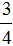
и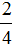
и ответим какая из этих дробей больше. Здесь одинаковые знаменатели, но разные числители. У дроби числитель больше, чем у дроби . Значит дробь больше, чем . Так и отвечаем. Отвечать нужно с помощью значка больше ( > )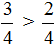
Этот пример можно легко понять, если вспомнить про пиццы, которые разделены на четыре части. пиццы больше, чем пиццы:
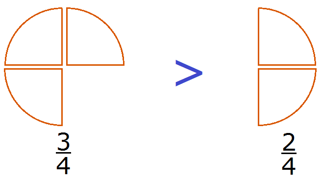
Каждый согласится с тем, что первая пицца больше, чем вторая.
Сравнение дробей с одинаковыми числителями
Следующий случай это когда числители дробей одинаковые, но знаменатели разные. Для таких случаев предусмотрено следующее правило:
Из двух дробей с одинаковыми числителями больше та дробь, у которой знаменатель меньше. И соответственно меньше та дробь, у которой знаменатель больше.
Например, сравним дроби
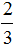
и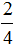
. У этих дробей одинаковые числители. У дроби знаменатель меньше, чем у дроби . Значит дробь больше, чем дробь . Так и отвечаем: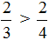
Этот пример можно легко понять, если вспомнить про пиццы, которые разделены на три и четыре части. пиццы больше, чем пиццы:
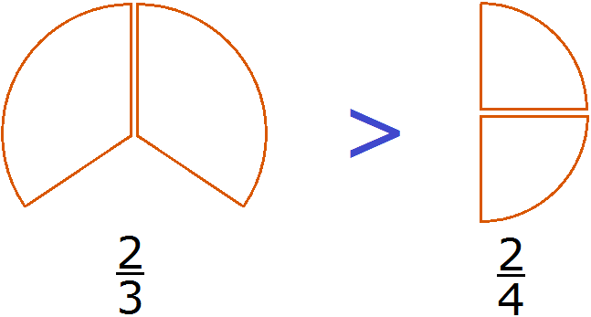
Каждый согласится с тем, что первая пицца больше, чем вторая.
Сравнение дробей с разными числителями и разными знаменателями
Нередко случается так, что приходиться сравнивать дроби с разными числителями и разными знаменателями. Например, сравнить дроби  и
и  .
.
Чтобы ответить на вопрос, какая из этих дробей больше или меньше, нужно привести их к одинаковому (общему) знаменателю. Затем можно будет легко определить какая дробь больше или меньше.
Приведём дроби  и
и  к одинаковому (общему) знаменателю. Найдём наименьшее общее кратное (НОК) знаменателей обеих дробей. НОК знаменателей дробей
к одинаковому (общему) знаменателю. Найдём наименьшее общее кратное (НОК) знаменателей обеих дробей. НОК знаменателей дробей  и
и  это число 6.
это число 6.
Теперь находим дополнительные множители для каждой дроби. Разделим НОК на знаменатель первой дроби  . НОК это число 6, а знаменатель первой дроби это число 2. Делим 6 на 2, получаем дополнительный множитель 3. Записываем его над первой дробью:
. НОК это число 6, а знаменатель первой дроби это число 2. Делим 6 на 2, получаем дополнительный множитель 3. Записываем его над первой дробью:
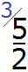
Теперь найдём второй дополнительный множитель. Разделим НОК на знаменатель второй дроби  . НОК это число 6, а знаменатель второй дроби это число 3. Делим 6 на 3, получаем дополнительный множитель 2. Записываем его над второй дробью:
. НОК это число 6, а знаменатель второй дроби это число 3. Делим 6 на 3, получаем дополнительный множитель 2. Записываем его над второй дробью:
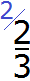
Умножим дроби на свои дополнительные множители:
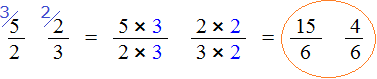
Мы пришли к тому что дроби, у которых были разные знаменатели, превратились в дроби, у которых одинаковые знаменатели. А как сравнивать такие дроби мы уже знаем. Из двух дробей с одинаковыми знаменателями больше та дробь, у которой числитель больше:
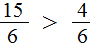
Правило правилом, а мы попробуем разобраться почему
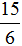
больше, чем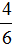
. Для этого выделим целую часть в неправильной дроби . В дроби ничего выделять не нужно, поскольку эта дробь уже правильная.После выделения целой части в дроби , получим следующее выражение:
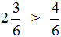
Теперь можно легко понять, почему больше, чем . Давайте нарисуем эти дроби в виде пицц:
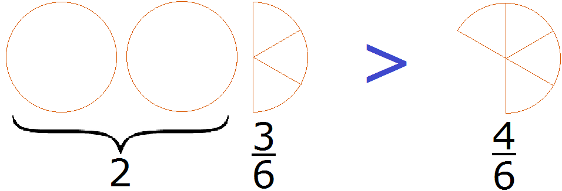
2 целые пиццы и
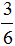
пиццы, больше чем пиццы.Вычитание смешанных чисел. Сложные случаи.
Вычитая смешанные числа иногда можно обнаружить, что всё идёт не так гладко как хотелось бы.
При вычитании чисел уменьшаемое должно быть больше вычитаемого. Только в этом случае будет получен нормальный ответ.
Например, 10 − 8 = 2
10 — уменьшаемое
8 — вычитаемое
2 — разность
Уменьшаемое 10 больше вычитаемого 8, поэтому мы получили нормальный ответ 2.
А теперь посмотрим, что будет если уменьшаемое окажется меньше вычитаемого. Пример 5 − 7 = −2
5 — уменьшаемое
7 — вычитаемое
−2 — разность
В этом случае мы выходим за пределы привычных для нас чисел и попадаем в мир отрицательных чисел, где нам ходить пока рано, а то и опасно. Чтобы работать с отрицательными числами, нужна соответствующая математическая подготовка, которую мы ещё не получили.
Если при решении примеров на вычитание вы обнаружите, что уменьшаемое меньше вычитаемого, то можете пока пропустить такой пример. Работать с отрицательными числами допустимо только после их изучения.
С дробями ситуация та же самая. Уменьшаемое должно быть больше вычитаемого. Только в этом случае можно будет получить нормальный ответ. А чтобы понять больше ли уменьшаемая дробь, чем вычитаемая, нужно уметь сравнить эти дроби.
Например, решим пример
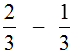
.Это пример на вычитание. Чтобы решить его, нужно проверить больше ли уменьшаемая дробь, чем вычитаемая. больше чем 
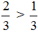
поэтому смело можем вернуться к примеру и решить его:
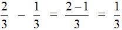
Теперь решим такой пример
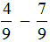
Проверяем больше ли уменьшаемая дробь, чем вычитаемая. Обнаруживаем, что она меньше:
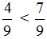
В этом случае разумнее остановиться и не продолжать дальнейшее вычисление. Вернёмся к этому примеру, когда изучим отрицательные числа.
Смешанные числа перед вычитанием тоже желательно проверять. Например, найдём значение выражения  .
.
Сначала проверим больше ли уменьшаемое смешанное число, чем вычитаемое. Для этого переведём смешанные числа в неправильные дроби:
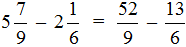
Получили дроби с разными числителями и разными знаменателями. Чтобы сравнить такие дроби, нужно привести их к одинаковому (общему) знаменателю. Не будем подробно расписывать как это сделать. Если испытываете затруднения на этом моменте, обязательно изучите действия с дробями.
После приведения дробей к одинаковому знаменателю, получаем следующее выражение:
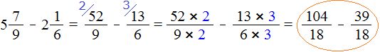
Теперь нужно сравнить дроби
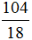
и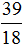
. Это дроби с одинаковыми знаменателями. Из двух дробей с одинаковыми знаменателями больше та дробь, у которой числитель больше.У дроби числитель больше, чем у дроби . Значит дробь больше, чем дробь .
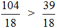
А это значит что уменьшаемое
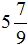
больше, чем вычитаемое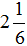
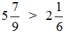
А значит мы можем вернуться к нашему примеру и смело решить его:

Пример 3. Найти значение выражения
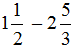
Проверим больше ли уменьшаемое, чем вычитаемое.
Переведём смешанные числа в неправильные дроби:
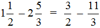
Получили дроби с разными числителями и разными знаменателями. Приведем данные дроби к одинаковому (общему) знаменателю:
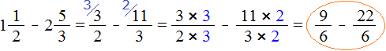
Теперь сравним дроби
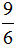
и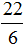
. У дроби числитель меньше, чем у дроби , значит дробь меньше, чем дробь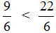
А это значит, что и уменьшаемое
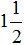
меньше, чем вычитаемое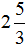
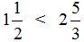
А это гарантировано приведёт нас в мир отрицательных чисел. Поэтому разумнее остановиться на этом месте и не продолжать вычисление. Продолжим его после изучения отрицательных чисел.
Пример 4. Найти значение выражения
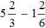
Проверим больше ли уменьшаемое, чем вычитаемое.
Переведём смешанные числа в неправильные дроби:
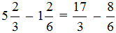
Получили дроби с разными числителями и разными знаменателями. Приведем их к одинаковому (общему) знаменателю:
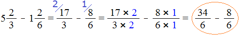
Теперь нужно сравнить дроби
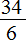
и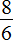
. У дроби числитель больше, чем у дроби . Значит дробь больше, чем дробь .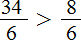
А это значит, что уменьшаемое
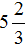
больше, чем вычитаемое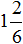
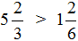
Поэтому мы смело можем продолжить вычисление нашего примера:
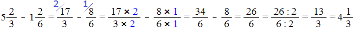
Сначала мы получили ответ
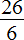
. Эту дробь мы сократили на 2 и получили дробь , но такой ответ нас тоже не устроил и мы выделили целую часть в этом ответе. В итоге получили ответ .